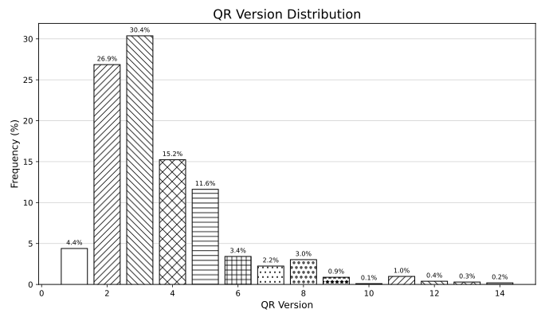
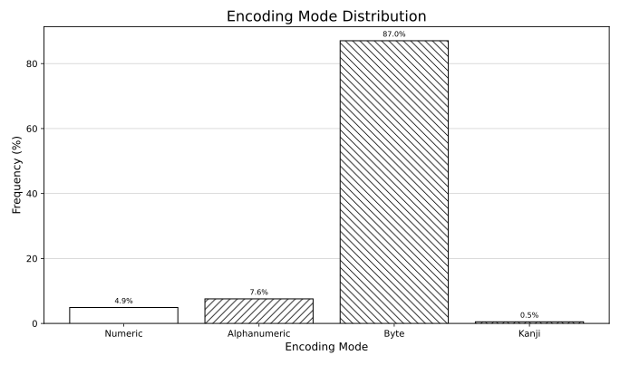
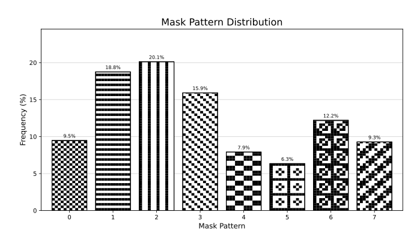

How to read a QR Code by hand
Quick Response Codes weren't made to be human-readable. However, you can still read them by hand; it just takes a bit of time and memorization. It's neither particularly exciting nor very quick-response, but it is fun and relaxing.
In this tutorial, you will learn to read code versions V1-V5 in byte-encoding mode with all Error-Correcting-Code (ECC) levels and masking patterns. According to a small (n=1024) random sample of QR codes I found on the internet, this means you'll be able to read about 80% of QR codes you will encounter in the real world. Reading larger or differently encoded codes isn't harder, but does require significantly more memorization and effort.
What you need
- A QR code you want to read. You will find out if your code qualifies or if you need to find another one at the bottom of this page. Note that this tutorial is about QR codes, not Aztec or UPC codes.
- A good amount of time. Depending on size, payload and your familiarity with ASCII-encoding, it'll probably take 10-120 minutes. But don't worry, you'll get better!
- This tutorial, either digital or printed out. If you decide to print it out (which I would recommend, since using a digital device really goes against the spirit), only print out the second page - this first page just explains the concept. Choose the QR version, ECC level and masking pattern before printing it out, since that page adapts to your settings. Page 3 contains information to memorize for pros that don't want to use the worksheet.
If you want to use this tutorial and do not yet know how QR codes work internally, I would highly recommend reading page 3+ before starting.
What does your code look like?
Click on the red (ECC level) and blue (masking pattern) squares in the preview to match the top-left corner of your QR code. Currently, you have selected ECC level and masking pattern (the three bits are XOR'd with 101).
QR codes come in 40 different sizes (the size of the grid the blocks are sitting on, without padding) also called versions.
Use version = (size - 17) ÷ 4 to calculate the version. This tutorial only helps you with versions 1-5.
Worksheet for reading QR
> Step 1.
Color in the QR code modules. If a module contains only a diagonal line, color only the upper left half. Only color in modules that are connected to the green line.> Step 2.
For each (interleaved) data digit (4 consecutive bits along the green line), fill it inside the block table. Count squares with a diagonal line as flipped (white<->black).> Step 3.
Now, decode the data.
Read the data block-by-block, essentially concatenating the blocks.
The first digit indicates the encoding mode: 1 for numeric, 2 for alphanumeric, 4 for byte. If it's not byte, this tutorial will not work - sorry! The next two digits represent the number of characters to read.
After, each two digits together form a number from 0 to 255, representing the ASCII values.
It's easy to memorize: 31 (hex) is '1', 41 is 'A',
61 is 'a', 2E is '.', 2F is '/', and
3A is ':'. These are enough to reconstruct most URLs and texts.
A more detailed short explanation
If you want to read a QR code by hand, you should at least have some knowledge of how they are generated. This is an attempt to explain how they are generated - at least the steps that we, as QR-by-hand readers, care about. Here are the (simplified) steps:
- They encode the data (usually text) into a bitstream (0s and 1s). QR codes support a few encodings which each support a different set of characters (e.g. numeric, which only encodes digits 0-9). Most of the time (90% according to a sample I've done), they encode all their data using byte-mode, which is arguably easiest to decode and supports all Latin letters, decimal digits and most common special characters. At this point, they might split their data into multiple segments, each with its own encoding mode (e.g. byte for 10 characters, then numeric for 5 characters, and so on) for efficiency, but most (again, 90%) encode everything using one single byte-encoded segment.
-
They add encoding and length data to the bitstream. For each segment (we assume it's the only segment for fun)
the encoding mode and the number of encoded characters are added to the beginning of the bitstream
(e.g.
01000000100110101101..., i.e., byte-mode, 9 characters and the encoded characters). For byte-mode encoding in versions 1-5, the length is always encoded in 8 bits (one byte). -
They choose an ECC level. QR codes pad the data-bits with error-correcting bytes, which may
be used to mathemagically repair misread bits. The maths behind this (QR codes use Reed-Solomon with GF(256))
is nice, but not necessary for reading the code, assuming you can read all the bits. The calculations are
theoretically entirely possible to do by hand, but would take a few hours (and importantly aren't interesting, very error-prone and not fun!). The available levels are
H(high),Q(quartile),M(medium), andL(low). This level will decide how many ECC codewords are added and into how many blocks the data will be split. -
They choose a version (size) of QR code to fit the data. Available are versions 1-40 with
size = version * 4 + 17. The largest QR code can contain 3706 bytes (including ECC and formatting, called 'codewords'). Depending on the level of ECC, up to 2956 of those are the data. The smallest QR can encode 26 bytes, of which at least 9 are data (see V1-H in the following table). -
They split the data-bits up into blocks.
According to a large table of Version and ECC level, they decide how many blocks the data will be split into.
The table isn't nice to memorize, but for versions 1-5, it's manageable. You might save some space in your mind palace by just memorizing the number of blocks and the total bytes, since the block-sizes are uniquely identified from that alone.
-
L M Q H V1 19 16 13 9 V2 34 28 22 16 V3 55 44 17+17 13+13 V4 80 32+32 24+24 9+9+9+9 V5 108 43+43 15+15+16+16 11+11+12+12 The data is then split into blocks (e.g. assume V3-H: the first 13 data-bytes go into block #1, the next go into block #2). Then, the blocks are interleaved to form one continuous byte-stream again (e.g. assume V3-H:
B1[0] B2[0] B1[1] B2[1] B1[2] B2[2] ...). This is done because each block has its own ECC and most damage is regional: essentially, this splits the damage across different ECC blocks, which may or may not be the smartest solution, but it is the specification we need to work with. -
They arrange the data on the QR code layout. They first draw the finder and timing patterns (the eyes and the dotted lines),
then fill the ECC level and masking pattern (spoiler!) info around the eyes (everything that is greyed out on the worksheet),
and then lay the bit-data in the free space, according to the pattern (the green zig-zag line on the worksheet). After, if there is still spare space, they add an end-sequence (a terminator digit:
0000) and then fill the rest with padding bytes (EC 11 EC 11 ...is specified, but most readers ignore this part anyways, so you can put whatever you want here! Maybe some secret data? Spoilers!). - They mathemagically compute the ECC bytes and add them to the code, behind the data blocks (in order of the zig-zag line).
-
They lay a masking pattern above the data. Finally, because we haven't had enough fun yet, we want to prevent certain
patterns from coming up in the final QR code. For example, we want to prevent shapes that look close to the timing patterns. Thus,
the generator chooses one of eight masking patterns which is overlaid only on the data (and ECC) part. Every QR module (pixel)
overlaid by the pattern is inverted (they perform an XOR with the data).
You will find a table of all masking patterns on the following page. I would advise memorizing the patterns visually and not by their formula. Patterns 0-4 are nice, the others are a little annoying to work with. Luckily, (according to my sample) the first five collectively make out about 70% of used patterns.
| Pattern 0 | Pattern 1 | Pattern 2 | Pattern 3 |
(x + y) % 2 === 0
|
y % 2 === 0
|
x % 3 === 0
|
(x + y) % 3 === 0
|
| Pattern 4 | Pattern 5 | Pattern 6 | Pattern 7 |
(floor(y / 2) + floor(x / 3)) % 2 === 0
|
(((x * y) % 2) + ((x * y) % 3)) === 0
|
((((x * y) % 2) + ((x * y) % 3)) % 2) === 0
|
((((x + y) % 2) + ((x * y) % 3)) % 2) === 0
|
How do I draw a QR code by hand?
You don't - at least I won't teach you how (yet). Some steps become easier when generating QR codes, especially masking patterns (you can basically (violating the spirit of the spec, as Ross Cox would say) choose freely!) and the encoding stage. However, you need to do the Reed-Solomon ECC Calculation. I tried doing it by hand many times, and it's just not particularly fun nor exciting. The required thousands of XORs are not worth the trouble, though it's probably inevitable that someone will get good at doing it by hand some day - good luck!
How to apply this knowledge using the worksheet
Since those steps were the generation, we need to reverse them, step-by-step (in reverse order). Here are the steps from the worksheet in more detail:
-
We first need to find out the QR code version, masking pattern and ECC level from the Metadata information. The QR
version can be calculated from the size (using
version = (size - 17) ÷ 4), and the mask and ECC level can be read as the first 5 bits below the upper-left eye finder pattern, whose layout is consistent across all versions.
-
The first two bits encode the ECC level (
00 -> H, 10 -> M, 01 -> Q, 11 -> L), while the third, fourth and fifth together encode the masking pattern that was used. The masking pattern indicator is (just for the nature of the game) of course also masked itself, using the mask101. Thus, you flip the first and third of the masking-bits and interpret those three bits as a binary number to get the masking pattern (actually, all metadata bits are flipped, but it's easier to just remember the ECC-level table as it is).The layout of a QR code is uniquely determined only by its version - the ECC level and masking pattern do not change the layout. Thus, it suffices to memorize the five layouts of the five versions. They are easy to memorize, since all follow the same idea, except version 1, which omits the fourth eye (technically an alignment pattern) and thus only has three eyes. I did some googling, and did not find any animal that has only three working (seeing) eyes "by default" - though I stand to be corrected (please email me, info on page 4).
- To begin working on the QR code, we must first get a copy of the raw data-bits down, ideally without the nasty masking pattern. For that reason, the worksheet marks squares affected by the masking pattern as struck through and advising to only color in the upper left half of the square. This is done so that in the next step, we can read the data, undoing the masking pattern for each digit we will read. One could also directly undo the masking pattern while copying the data - which I have tried and found more tedious and confusing than this way.
-
Now, we want to read the data as hex-digits into the prepared blocks below the QR code. While doing this,
we undo the block-interleaving byte-by-byte (each byte being two digits). First fill out the first two digits of the first block, then the first
two digits of the second block, until we reach the first byte of the last block, after which we come to the
second byte of the first block, continuing the pattern. If you're using the worksheet online, you can click on
a cell to see the related QR modules highlighted in light green on the QR code itself. Beware to follow the green
read-line exactly and flip the mask-affected modules. You may use the 4-bit to hex-digit table to the left if
you're not too familiar with hexadecimal.
PS: If you want to quickly skip this more tedious step in the web version, try typing the letter N inside one of the blocks (it automatically reads the QR code block and fills in the correct digit).
-
Lastly, we want to decode the continuous stream of data to get the ASCII values. As outlined in Generation Step #2,
the first four bits (the first digit) represent the encoding mode, which we hope to be byte-mode (
4 -> 0100). The next two digits together indicate how many characters will follow. If the QR code is encoded using only a single segment, you can ignore this. However, there is no way to tell how many segments will follow until you've reached the end of the first segment. After the first segment, there will either follow a terminator symbol (0 -> 0000) or the start of a new segment (the encoding mode, then the length, then the data), continuing until either the terminator or the end is reached.
-
Each two consecutive digits together form a byte (e.g.
B2 -> 1011 0010), which can be converted to a character according to the ASCII table. Here is the full (relevant) table for reference - I would suggest memorizing some key values as described in the worksheet. All entries starting with0,1,8-Fare used for control sequences or UTF-Encoding, which is beyond what we need to read (for example, emojis or special characters would be encoded this way, but we happily ignore them). URLs are always ASCII (for our intents and purposes, please don't "technically!" me).
| x0 | x1 | x2 | x3 | x4 | x5 | x6 | x7 | x8 | x9 | xA | xB | xC | xD | xE | xF | |
| 2x | space | ! | " | # | $ | % | & | ' | ( | ) | * | + | , | - | . | / |
| 3x | 0 | 1 | 2 | 3 | 4 | 5 | 6 | 7 | 8 | 9 | : | ; | < | = | > | ? |
| 4x | @ | A | B | C | D | E | F | G | H | I | J | K | L | M | N | O |
| 5x | P | Q | R | S | T | U | V | W | X | Y | Z | [ | \ | ] | ^ | _ |
| 6x | ` | a | b | c | d | e | f | g | h | i | j | k | l | m | n | o |
| 7x | p | q | r | s | t | u | v | w | x | y | z | { | | | } | ~ |
Analysing random QR codes
One could learn to read all specified QR code formats (including all larger QR code sizes) by memorizing the ECC block table. However, I think it's a fair compromise to only learn to read a good percentage of QR codes in the wild.
To decide which parameters we can optimize for this, I did some analysis. I downloaded 1024 QR codes from Flickr
through Openverse, a large library of images licensed under CC licenses.
I found the images by searching for the following keywords, which I got by asking my favourite LLM.
QR code, QR-Code, qrcode, scan QR, scan the QR code, QR advertisement, QR billboard, QR poster, QR flyer, QR sign, QR sticker, QR label, QR packaging, QR product, QR receipt, QR ticket, QR boarding pass, QR event, QR conference, QR badge, QR restaurant, QR menu, QR cafe, QR hotel, QR tourism, QR museum, QR exhibition, QR artwork, QR street, QR transit, QR bus, QR train, QR bicycle, QR car, QR parking, QR payment, QR donation, QR charity, QR bitcoin, QR banking, QR covid, QR vaccine, QR check in, QR contact tracing, QR health, QR business card, QR brochure, QR newspaper, QR magazine, QR book, QR education, QR school, QR university, QR library, QR government, QR campaign, QR election, QR protest, QR church, QR cemetery, QR food, QR drink, QR beer, QR wine, QR Pepsi, QR WeChat, QR Alipay, QR WhatsApp, QR Instagram, QR Facebook, 二维码, 二维码 广告, 二维码 支付, 二维码 菜单, 二维码 海报, QRコード, QRコード 広告, QRコード 支払い, QRコード メニュー, código QR, código QR publicidad, código QR pago, código QR menú, code QR, code QR publicité, code QR paiement, code QR menu, QR-код, QR-код реклама, QR-код оплата, QR-код меню, QR-Code Werbung, QR-Code Zahlung, QR-Code Speisekarte, codice QR, codice QR pagamento, codice QR menu, código QR Brasil, QR code India, QR code Korea, QR code Africa
I subsequently processed all the downloaded images of QR codes and got some good diagrams.




The set of single segment, V1-V5, byte-mode encoded QR codes accounts for 79.8% of the sample, which is good enough for me.
This page and tutorial was created by Noel Friedrich (my first name is Noel). If you want to message me about this or any other idea/project, feel free to either
- use the contact form on my website or
- write me an email at
<first-name>.<last-name>@outlook.de.
If you're wondering, this page wasn't created using a pdf-editor or LaTex, it's all hand-crafted plain html. I didn't really find a better way of getting the interactive parts to work.
21.06.2026